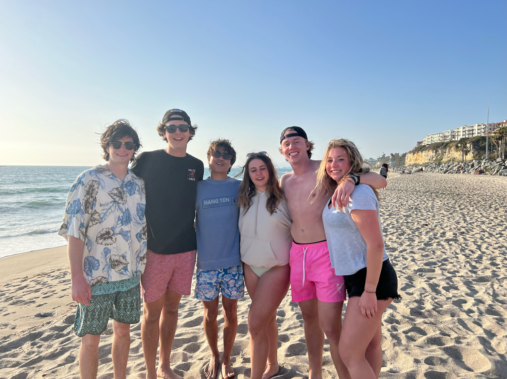

Home
Resume
PHX Suns Homepage
My Home
The first picture on the left is a picture of me and my brothers Benny and Jack at the world cup.
It was during the United States vs. Wales games.
The picture on the right shows me, my Dad, and Jack on the Fourth of July
last year.
Going to the World Cup made me a lot more interested in the stats of the teams.
Below is a graph that shows what each teams total transfers is worth
Transers are when professional football clubs buy players from other clubs.
This is important because it shows each team's player perigree.

This summer I visited Bella and Ashley in Denver.
We went to Red Rocks for a concert
We also went downtown to watch the Avalanche.
It was a great trip and I will for sure visit again.

Last Spring break me and all my friends visited San Diego.
We were able to go to the sand dunes,
the beach, and even surfed!
Here is my favorite game for the Holidays:
The game is called Christmas Fishing and the goal
is to get as many fish in your bucket as you can!